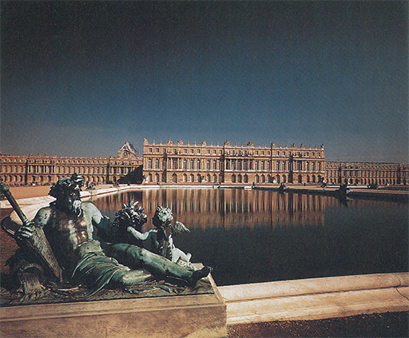
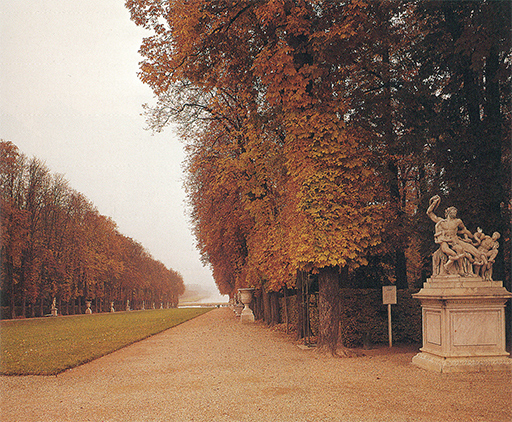
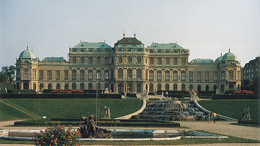
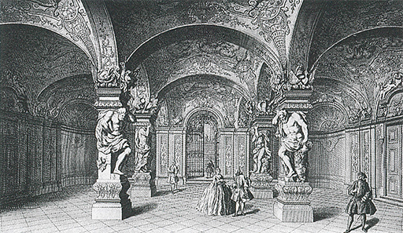
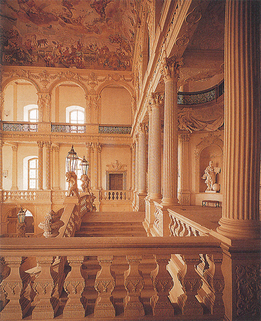
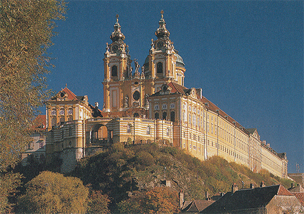
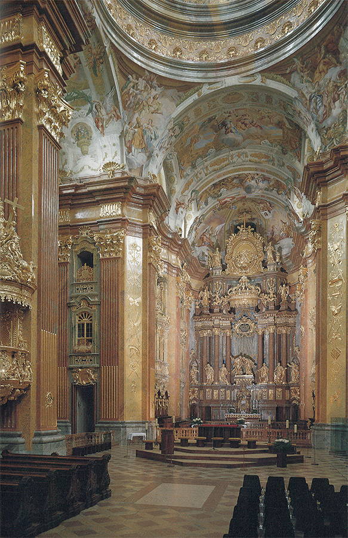
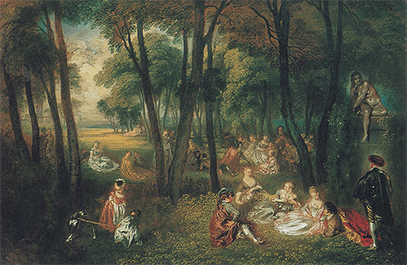
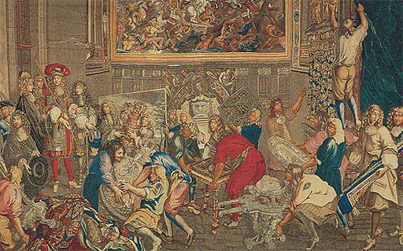

EL PODER Y LA GLORIA, II
Francia, Alemania y Austria, final del siglo XVII y primera mitad del XVIII
No solamente la Iglesia católica descubrió el poder del arte para impresionar y abrumar. Los reyes y príncipes de la Europa del siglo XVII desearon igualmente ostentar su poderío e incrementar de este modo su influjo sobre el espíritu de las gentes. También ellos desearon aparecer como seres de otra condición, destinados a gobernar por derecho divino sobre el común de los mortales. Esto ha de aplicarse muy en particular al gobernante más poderoso de finales del siglo XVII, el rey Luis XIV de Francia, en cuyo programa político se insertó deliberadamente la ostentación y la magnificencia de la realeza. Seguramente no fue por casualidad por lo que Luis XIV invitó a Gian Lorenzo Bernini a que fuera a París para que colaborara en el proyecto de su palacio. Este grandioso proyecto nunca se llevó a cabo, pero otro de los palacios de Luis XIV se convirtió en el símbolo mismo de su inmenso poder. Fue este palacio el de Versalles, construido entre 1660 y 1680 (ilustración 291); pero es tan vasta su amplitud que ninguna fotografía puede dar una idea adecuada de su aspecto. No menos de 123 ventanas que miran al parque posee cada piso, y el propio parque, con sus árboles recortados, sus jarrones y estatuas (ilustración 292), y sus terrazas y estanques, comprende varios kilómetros de extensión.
El barroquismo del palacio de Versalles reside más en sus dilatadas proporciones que en sus detalles ornamentales. Sus arquitectos se propusieron principalmente agrupar las enormes masas del edificio en alas claramente visibles, dando a cada una de ellas un aspecto noble y grandioso. Acentuaron el centro del piso principal mediante una hilera de columnas jónicas, que sostienen una cornisa con una serie de estatuas en su parte superior, y flanquearon esta vistosa parte central con adornos de índole análoga. Con una simple combinación de formas renacentistas difícilmente hubieran conseguido romper la monotonía de tan vasta fachada, pero con ayuda de estatuas, hornacinas y trofeos lograron bastante variedad. En edificios como éste es donde, por consiguiente, puede apreciarse mejor la verdadera función y los propósitos de las formas barrocas. Si los que realizaron el proyecto de Versalles hubieran sido un poco más osados y hubiesen empleado medios menos normales para articular y agrupar las masas del enorme edificio, su éxito hubiera sido aún mayor.

291 Louis Le Vau y Jules Hardouin-Mansart, Palacio de Versalles, cerca de París, 1655-1682. Palacio barroco.

292 Jardines de Versalles. El grupo de la derecha es una copia de Laocoonte (ilustración 69).
Sólo en la generación siguiente fue asimilada del todo esta lección por los arquitectos de la época, pues las iglesias romanas y los castillos franceses de estilo barroco se apoderaron de la imaginación de los artistas en aquellos días. Cada príncipe del sur de Alemania deseaba poseer su propio Versalles; cada pequeño monasterio de Austria o de España quería competir con la impresionante magnificencia de las concepciones de Borromini y Bernini. El período que ronda 1700 es uno de los más grandes en arquitectura, y no sólo en ella. Esos castillos e iglesias no eran proyectados tan sólo como edificios, sino que todas las artes debían contribuir a lograr el efecto de un mundo artificial y fantástico. Ciudades enteras eran empleadas como escenarios, extensiones de terrenos se convertían en jardines, arroyos en cascadas; a los artistas se les dejaba rienda suelta para que hicieran planos siguiendo su sentir, así como para trasladar sus más insólitas visiones a la piedra y el estuco dorado. Con frecuencia se terminaba el dinero antes de que sus proyectos se convirtieran en realidad, pero cuando éstos llegaban a concluirse, en esta erupción de creaciones extravagantes, transformaban el aspecto de muchas ciudades y paisajes de la Europa católica. Particularmente en Austria, Bohemia y el sur de Alemania, las ideas del barroco italiano y francés se fusionaron en el estilo más osado y consistente. La ilustración 293 muestra el castillo que un arquitecto austriaco, Lucas von Hildebrandt (1668-1745), construyó en Viena para un aliado de los Marlborough, el príncipe Eugenio de Saboya. El castillo se yergue sobre una colina, y parece flotar brillantemente sobre un jardín con terrazas, fuentes y setos recortados. Hildebrandt agrupó el edificio en siete cuerpos distintos que recuerdan pabellones de jardín; el de la parte central, con cinco ventanas, sobresale flanqueado por otros dos ligeramente más bajos, y el grupo formado así se halla flanqueado a su vez por otros dos más bajos, al extremo de cada uno de los cuales se alzan dos pabellones en forma de torre que enmarcan todo el conjunto del edificio. El pabellón del centro y los dos laterales son los más ricamente adornados; el edificio, en su totalidad, constituye un intrincado esquema que, no obstante, resulta perfectamente nítido y preciso en su silueta. Esta nitidez no queda perjudicada por los adornos caprichosos y grotescos que Hildebrandt empleó en los pormenores de la decoración, las pilastras adelgazadas hacia la parte superior, los tímpanos quebrados y en espiral encima de las ventanas y las estatuas y los trofeos alineados sobre el tejado.

293 Lucas von Hildebrandt. Alto Belvedere, Viena, 1720-1724.
Solamente al ingresar en el edificio es cuando recibimos de golpe la impresión de este fantástico estilo decorativo. La ilustración 294 muestra el zaguán de entrada del palacio del príncipe Eugenio, y la ilustración 295, la escalera de un castillo alemán proyectado por Hildebrandt. No podemos hacer justicia a estos interiores si no tratamos de representárnoslos en un día en que el propietario diera una fiesta u ofreciera una recepción, cuando las lámparas estuvieran encendidas y las damas y caballeros, con los alegres y ostentosos atavíos de la época, subieran esos peldaños; en tal momento, el contraste entre las oscuras calles de entonces, llenas de lodo e inmundicias, y el mundo maravilloso y radiante de las mansiones de los nobles, debió ser abrumador.

294 Lucas von Hildebrandt. Alto Belvedere, hall de entrada y escalinata, Viena, 1720-1724. Grabado del siglo XVIII.

295 Lucas von Hildebrandt y Johann Dientzenhofer. Escalinata del castillo de Pommersfelden, Alemania, 1713-1714.
Los edificios de la Iglesia hicieron uso de análogos efectos deslumbradores. La ilustración 296 muestra el monasterio austríaco de Melk, sobre el Danubio. Cuando se llega hasta él descendiendo por el río, el monasterio, con su cúpula y sus torres extrañamente conformadas, se yergue sobre la colina como una aparición irreal. Fue construido por un arquitecto local llamado Jakob Prandtauer († 1726) y lo decoraron algunos de los virtuosi italianos trashumantes, que siempre se hallaban provistos de nuevas concepciones e ideas del vasto caudal de esquemas barrocos. ¡Cuán excelentemente aprendieron esos artistas humildes el difícil arte de agrupar y organizar un edificio para conferirle una apariencia de grandiosidad sin que cayera en la monotonía! También fueron muy expertos en calcular la ornamentación, empleando con tino las formas más extravagantes, pero siempre las más eficaces, en aquellas partes del edificio que querían poner de relieve.

296 Jakob Prandtauer, Monasterio de Melk, 1702.
En el interior, sin embargo, abandonaron toda contención. Ni siquiera Bernini o Borromini, en sus momentos de mayor exuberancia, llegarían tan lejos. Nuevamente tenemos que imaginar lo que significaría para un sencillo campesino austriaco dejar su granja e ingresar en este extraño mundo de maravilla (ilustración 297). Hay en él nubes por todas partes, con ángeles tocando instrumentos y gesticulando en la bienaventuranza del Paraíso; algunos se han asentado sobre el púlpito, todo parece moverse y danzar, y el suntuoso marco arquitectónico del altar mayor parece ir de acá para allá obedeciendo el ritmo de júbilo general. Nada es «normal» o «natural» en una iglesia semejante, ni quiere serlo. Se propone proporcionarnos una idea anticipada del Paraíso, que acaso no corresponda a la de todos y cada cual; pero cuando uno se halla en medio de todo esto, lo que nos rodea hace imposible cualquier interrogación: nos sentimos como en un mundo en el que nuestras normas y juicios carecen, de aplicación.

297 Jakob Prandtauer, Antonio Beduzzi y Josef Munggenast. Interior de la iglesia del monasterio de Melk, h. 1738.
Se comprende que al norte de los Alpes, no menos que en Italia, las artes por separado pasaran rápidamente a esta orgía ornamental y perdieran mucho de su importancia independiente. Existieron, claro está, pintores y escultores notables hacia 1700, pero tal vez hubo sólo un maestro cuyo arte puede compararse con el de los grandes pintores de la primera mitad del siglo XVII. Este maestro fue Antoine Watteau (1684-1721). Watteau procedía de una parte de Flandes que había sido conquistada por Francia unos años antes de su nacimiento, y se estableció en París, donde murió a la edad de treinta y siete años. También él proyectó decoraciones para el interior de los castillos de la nobleza, de modo que ofrecieran un fondo adecuado a las fiestas de la sociedad cortesana. Pero se diría que los espectáculos reales no satisfacían la imaginación del artista. Empezó a pintar sus propias visiones de la vida divorciadas de todo lo obligado y trivial, un ensueño de alegres excursiones por y en parques maravillosos, en los que no llueve nunca, de reuniones musicales donde son bellas todas las damas y graciosos todos los galanes, una sociedad en la que todos están vestidos con sedas rutilantes sin que parezcan llamativas, y donde la vida de los pastores y pastoras se diría una sucesión de minuetos. De tal descripción puede extraerse la impresión de que el arte de Watteau es artificioso y preciosista en extremo. Para muchos reflejó los gustos de la aristocracia francesa de comienzos del siglo XVIII, época conocida con el nombre de rococó: la moda de los colores exquisitos y las ornamentaciones delicadas que siguió a la más vigorosa del período barroco, y que se manifestó con alegre frivolidad. Pero Watteau fue demasiado gran artista como para no constituir más que un mero exponente de la moda de su tiempo; por el contrario, fue más bien él quien moldeó con sus ensueños e ideales la moda a la que damos el nombre de rococó. Del mismo modo que Van Dyck contribuyó a crear la idea de la desenvoltura señorial (ilustración 262), Watteau enriqueció nuestro caudal imaginativo mediante sus visiones de alegre galantería.
La ilustración 298 muestra su cuadro de una excursión en un parque. Aquí no hay nada de la ruidosa alegría de las francachelas de Jan Steen (ilustración 278), sino que predomina una dulce y casi melancólica calma. Estas damas y caballeros jóvenes acaban de sentarse y sueñan. La luz juega sobre sus resplandecientes vestidos y transfigura la arboleda convirtiéndola en un paraíso terrenal. Las calidades del arte de Watteau, la delicadeza de su pincelada y el refinamiento de sus armonías de color no pueden reproducirse fácilmente. Sus cuadros y dibujos, extraordinariamente llenos de sensibilidad, deben ser vistos y saboreados en el original. Al igual que Rubens, al que admiró, Watteau podía expresar la sensación de vida en un cuerpo que pareciera palpitar con sólo un soplo de yeso o de color. Pero el carácter de sus estudios se diferencia tanto de los de Rubens como sus cuadros de los de Jan Steen. Existe un matiz de tristeza en esas visiones suyas de la belleza que difícilmente puede describirse o definirse, pero que lleva al arte de Watteau más allá de la esfera de la simple habilidad o la lindeza. Antoine Watteau era un enfermo que murió tuberculoso en edad temprana. Acaso fuera su convencimiento de la transitoriedad de la belleza lo que confirió a su arte esa intensidad que ninguno de sus muchos admiradores e imitadores pudo igualar.

298 Antoine Watteau, Fiesta en un parque, h. 1719. Óleo sobre lienzo, 127,6 x 193 cm; colección Wallace, Londres.

El arte bajo el mecenazgo real: Luis XIV visitando la Real Fábrica de Gobelinos en 1667. Tapiz; Museo de Versalles.